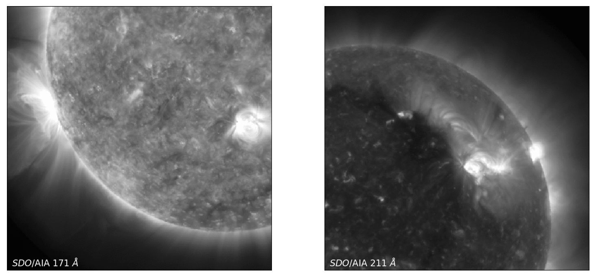

Differential Emission Measurements¶
by Paul Wright, Mark Cheung, Rajat Thomas, Richard Galvez, Alexandre Szenicer, Meng Jin, Andrés Muñoz-Jaramillo, and David Fouhey
The Atmospheric Imaging Assembly (AIA) instrument aboard the Solar Dynamics Observatory images the solar atmosphere nearly simultaneously using ten different filters in broad wavelengths ranging from 4500 Å to 94 Å, which correspond to temperatures ranging from 5000K up to 10MK (Lemen et al. 2012). Solar features span a vast range of temperatures – for example, flaring regions can heat up to 10MK, while other features, such as coronal holes, remain several orders of magnitude cooler. By using near-simultaneous multi-wavelength observations of the solar corona, we can effectively constrain the temperature of localized solar features.
In this chapter we will introduce a deep learning approach to do this, called Differential Emission Measure (DEM) Inversion. For this notebook, DeepEM is a trained on one set of SDO/AIA observations (six optically-thin channels; 6 x N x N) and DEM solutions (in 18 temperature bins from logT = 5.5 - 7.2 K, 18 x N x N; Cheung et al 2015) at a resolution of 512 x 512 (N = 512) using a 1x1 2D Convolutional Neural Network with a single hidden layer.
The DeepEM example presented here takes every DEM solution with no regards to the quality or existence of the solution. As will be demonstrated, when this method is trained with a single set of SDO/AIA images and DEM solutions, DeepEM solutions have a similar fidelity to Basis Pursuit (with a significantly increased computation speed—on the order of 10 million DEM solutions per second), and additionally, DeepEM finds positive solutions for every pixel.
This notebook was developed with PyTorch. DeepEM is available on Github and this work is published in the following paper: Szenicer A. et al., 2019, Science Advances , 5, 10.

Example of the DeepEM solutions for logT ~ 5.9 K and 6.3 K in comparison to the Basis Pursuit (and SDO/AIA images) for the same temperature.
This project was initiated during the 2018 NASA Frontier Development Lab (FDL) program, a partnership between NASA, SETI, NVIDIA Corporation, Lockheed Martin, and Kx. We gratefully thank our mentors for guidance and useful discussion, as well as the SETI Institute for their hospitality.